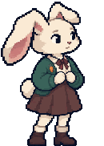선택 대화 시안 · 주민/방문객토리초록 카디건 · 당근 브로치 · 끝이 접힌 긴 귀겁 많고 정직한 토끼. 당근을 좋아하고 딸기 알레르기가 있다. 무대에 서면 몹시 떨린다.
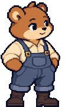선택 대화 시안 · 주민/방문객보리꿀빛 털 · 둥근 어깨 · 멜빵 작업복힘세고 마음 약한 곰. 꿀을 제일 좋아한다. 혼날까 봐 숨기다가 일을 키우는 버릇이 있다.
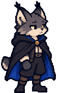선택 대화 시안 · 주민/방문객네로스라소니 귀털 · 검은 망토 · 닳은 황동 단추검은 망토단의 우두머리. 30년 전 별빛 등불 아래에서 부엉이 탐정에게 놓아진 어린 스라소니.
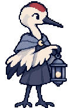선택 대화 시안 · 주민/방문객설이하얀 두루미 · 붉은 정수리 · 달빛색 숄달빛 종을 지키는 두루미. 종소리로 시각을 재는 마을의 시계 같은 존재. 말이 느리고 정확하다.
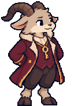선택 대화 시안 · 주민/방문객뿔이 촌장곡선 뿔 · 촌장 예복 · 목에 건 금고 열쇠은빛 마을 촌장. 체면을 몹시 차린다. 마을 금고 열쇠를 늘 목에 걸고 다닌다.
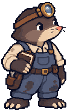선택 대화 시안 · 주민/방문객톡두더지 시계공 · 확대경 · 기름 묻은 작업복땅속 작업실에서 시계를 고치는 두더지. 소리를 담는 '메아리 상자'를 발명했다. 눈이 나빠 시간을 소리로 잰다.
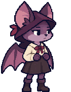초기 밤이 · 현재 인물 유지밤이보라빛 박쥐 · 접힌 날개 · 비대칭 후드종탑 꼭대기에서 낮잠을 자고 밤에 날아다니는 박쥐 소녀. 말투가 시니컬하고, 어른들을 잘 믿지 않는다.
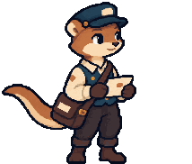선택 대화 시안 · 주민/방문객슬링꿀빛 족제비 · 우편 가방 · 말끔한 장갑한 달 전 은빛 마을에 온 족제비 배달부. 친절하고 눈치가 빠르다. 어디서 왔는지는 아무도 모른다.
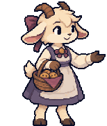선택 대화 시안 · 주민/방문객모모 관장크림빛 염소 · 리본 · 쿠키 바구니숲속 박물관의 관장. 늘 웃으며 쿠키를 나눠 준다. 마을 사람 누구에게나 친절하다.
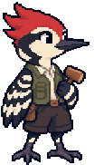선택 대화 시안 · 주민/방문객따닥붉은 볏 · 줄무늬 날개 · 작은 목공 망치모든 걸 두드려 봐야 직성이 풀리는 딱따구리. 소리로 속을 본다고 믿는다. 부끄러우면 더 세게 두드린다.
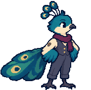선택 대화 시안 · 주민/방문객피코청록 깃털 · 유려한 꼬리 · 예술가 스카프자기를 '피코'라고 부르는 공작새. 반짝이는 것 앞에 서면 거기 비친 자기 얼굴부터 본다. 반짝이를 좋아한다는 이유로 늘 의심받는다.
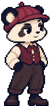선택 대화 시안 · 주민/방문객뭉치판다 도련님 · 자주색 베레 · 흰 장갑마을에 새로 온 수집상 백 부인의 아들. 열다섯 살쯤. 거만하고, 약한 아이를 골리고, 잘못은 언제나 남의 것이다. 말끝마다 '뭐, 그렇다는 거야.'를 붙인다.
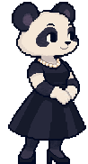선택 대화 시안 · 주민/방문객백 부인우아한 판다 · 흰 장갑 · 진주와 검은 드레스언덕 위 하얀 저택에 사는 수집상. 반짝이는 것이라면 무엇이든 모은다. 늘 하얀 장갑을 끼고, 목소리를 높이는 법이 없다.
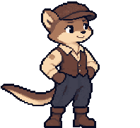선택 대화 시안 · 주민/방문객실룩늙은 족제비 · 마부 모자 · 낡은 가죽 조끼백 부인 저택의 마부였던 족제비. 부인이 끌려간 뒤에도 마차 창고에 남아 마차를 닦는다. 말수가 적고, 늘 한 박자 늦게 웃는다.
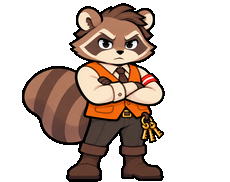초기 왕구 · 현재 너울과 대조왕구너구리 위원장 · 주황 조끼 · 축제 완장축제 준비위원장. 마을에서 목소리가 제일 크고, 제일 먼저 결론을 내린다. 나쁜 사람은 아니지만, 틀렸다는 말을 제일 늦게 한다.
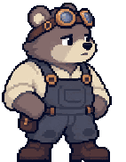선택 대화 시안 · 주민/방문객무쇠 할아버지회색 늙은 곰 · 광부 고글 · 무쇠빛 작업복이름 없는 마을의 늙은 등불지기. 광산이 닫히기 전엔 광부였다. 말이 짧고, 한쪽 귀가 어둡다. 손녀 솜이와 둘이 산다.
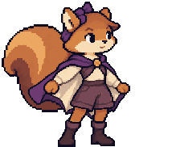선택 대화 시안 · 주민/방문객솜이날다람쥐 소녀 · 리본 · 활공 망토무쇠 할아버지의 손녀. 여덟 살 날다람쥐. 지붕에서 지붕으로 활공하고, 반짝이는 건 뭐든 따라간다.
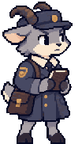선택 대화 시안 · 주민/방문객서리 검사원회색 염소 · 규격 코트 · 도장 가방'등불 관리국' 수석 검사원. 회색 코트, 회색 모자, 도장 가방. 표정이 거의 없고, 말끝마다 규정을 댄다.
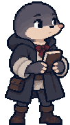선택 대화 시안 · 주민/방문객우박어린 두더지 · 큰 코트 · 세 번 접은 소매관리국 견습 검사원. 신문 광고를 보고 들어온 신입이다. 코트가 커서 소매를 세 번 접었다. 규정집을 품에 안고 다닌다.
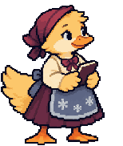선택 대화 시안 · 주민/방문객누비 아주머니따뜻한 오리 아주머니 · 눈꽃 앞치마 · 넓은 손눈꽃 여관 주인. 수다스럽고 손이 크다. 손님이 일 년에 몇 없는 여관을 30년째 지킨다.
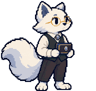선택 대화 시안 · 주민/방문객은호 사장흰 여우 보석상 · 금테 안경 · 은단추 조끼도시 보석상 거리 7번지의 흰 여우. 금테 안경에 은단추 조끼. 말끝을 '…하오', '…소'로 맺는다. 뒷방 벽에 '관리국 창구'라는 작은 팻말을 걸어 두었다.
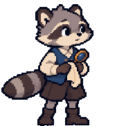선택 대화 시안 · 주민/방문객구슬어린 회색 너구리 · 보석 닦는 천 · 작은 확대경은호 보석상의 어린 견습생 너구리. 하루 종일 보석을 닦는다. 말은 더듬지만 손끝은 누구보다 섬세하다.
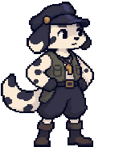선택 대화 시안 · 주민/방문객바둑이점박이 개 · 야경 모자 · 목의 호루라기도시의 야경꾼. 점박이 개. 호루라기를 목에 걸고 밤거리를 돈다. 시계는 잘 안 보고, 가로등이 켜지는 걸 보고 시각을 짐작한다.
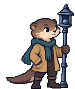선택 대화 시안 · 주민/방문객등불지기 아저씨회갈색 토끼 · 긴 장대 · 낡은 목도리회갈색 토끼. 긴 장대와 낡은 목도리. 해 질 녘부터 도시의 가로등을 하나씩 켠다. 말수가 적고, 자기 이야기는 잘 하지 않는다.